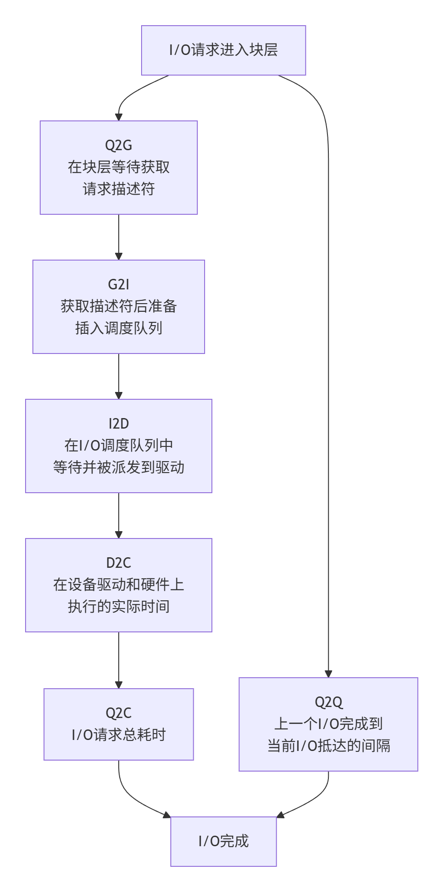
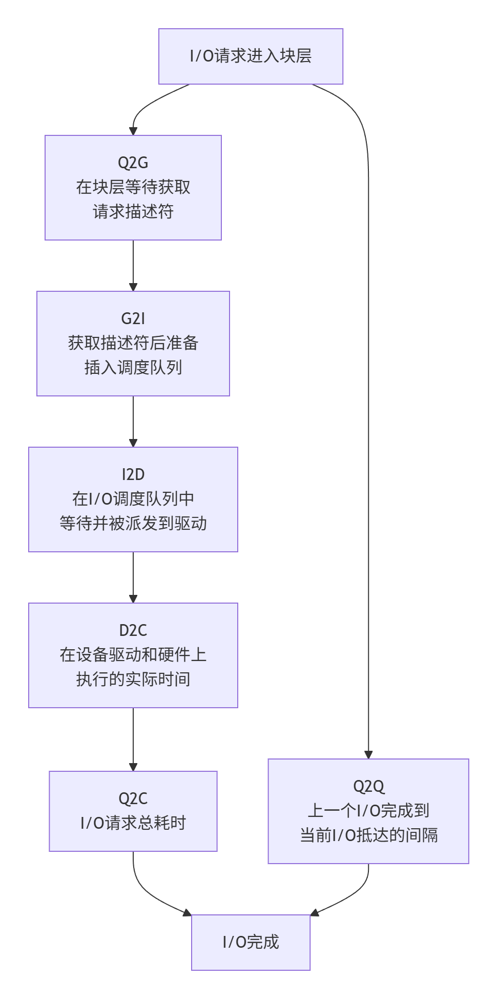

快速分析
使用命令组合 1 2 3 4 5 6 7 8 9 10 11 12 # 安装工具 yum install blktrace -y # 采集数据：（监控30秒） blktrace -d /dev/nvme0n1 -w 30 # 合并数据： blkparse -i nvme0n1 -d nvme_trace.bin。 # 解析分析：，重点查看 "ALL" 统计区和 "Device Overhead" 分布 btt -i nvme_trace.bin # 组合命令 blktrace -d /dev/sdf -w 5 -o - | blkparse -i - -d btt.bin > blkparse.txt btt -i btt.bin
1 2 # 追踪设备/dev/sda并输出blkparse数据 btrace /dev/sda
实际上btrace是调用了blktarce和blkparse组合出来的脚本文件，位于/usr/bin/btrace
理论分析
一个I/O请求，从应用层到底层块设备，路径如下图所示：
Remap: 可能被DM(Device Mapper)或MD(Multiple Device, Software RAID) remap到其它设备
Split: 可能会因为I/O请求与扇区边界未对齐、或者size太大而被分拆(split)成多个物理I/O
Merge: 可能会因为与其它I/O请求的物理位置相邻而合并(merge)成一个I/O
被IO Scheduler依照调度策略发送给driver
被driver提交给硬件，经过HBA、电缆（光纤、网线等）、交换机（SAN或网络）、最后到达存储设备，设备完成IO请求之后再把结果发回。
blktrace 能够记录下IO所经历的各个步骤:
第一个字段：8,0 这个字段是设备号 major device ID和minor device ID。
第二个字段：3 表示CPU
第三个字段：11 序列号
第四个字段：0.009507758 Time Stamp是时间偏移
第五个字段：PID 本次IO对应的进程ID
第六个字段：Event，这个字段非常重要，反映了IO进行到了那一步
第七个字段：R表示 Read， W是Write，D表示block，B表示Barrier Operation
第八个字段：223490+56，表示的是起始block number 和 number of blocks，即我们常说的Offset 和 Size
第九个字段： 进程名
blkparse的输出包含了每个 I/O 请求事件的详细信息，理解这些字段是分析的关键：
设备号 (Major, Minor) 如 8,0通常指 /dev/sda
CPU ID 处理此事件的 CPU 核心编号
序列号 事件的序列号
时间戳 事件发生的时间（通常为相对时间）
进程ID (PID) 发起 I/O 操作的进程 ID
事件类型 (Action) 核心字段 ，表示 I/O 请求所处的阶段
RWBS 描述符 描述 I/O 类型：R(读)/W(写)/B(屏障)/S(同步)
扇区信息 如 2048 + 8，表示起始扇区号及连续扇区数
进程名 发起 I/O 的进程名称
其中，事件类型 (Action) 是理解 I/O 路径的关键，它记录了请求从产生到完成的各个阶段：
Q (Queued): I/O 请求进入块层。G (Get request): 分配请求结构。I (Inserted): 请求插入 I/O 调度器队列。D (Issued): 请求提交给设备驱动。C (Completed): 请求完成。
根据这些事件的时间戳，可以计算出 I/O 路径各阶段的耗时，例如：
D2C : 请求在驱动和硬件上消耗的时间，是评估硬件性能 的关键指标。I2D : 请求在 I/O 调度队列中等待的时间，反映调度器性能 。Q2C : 整个 I/O 请求的总时间，近似于 iostat中的 await。
其中第六个字段非常有用：每一个字母都代表了IO请求所经历的某个阶段。 1 2 3 4 5 6 7 8 9 Q – 即将生成IO请求 | G – IO请求生成 | I – IO请求进入IO Scheduler队列 | D – IO请求进入driver | C – IO请求执行完毕
注意，我们心心念念的service time，也就是反应块设备处理能力的指标，就是从D到C所花费的时间，简称D2C。
而iostat输出中的await，即整个IO从生成请求到IO请求执行完毕，即从Q到C所花费的时间，我们简称Q2C。
我们知道Linux 有I/O scheduler，调度器的效率如何，I2D是重要的指标。
注意，这只是blktrace输出的一个部分，很明显，我们还能拿到offset和size，根据offset，我们能拿到某一段时间里，应用程序都访问了整个块设备的那些block，从而绘制出块设备访问轨迹图。
另外还有size和第七个字段（Read or Write），我们可以知道IO size的分布直方图。对于本文来讲，我们就是要根据blktrace来获取这些信息。 # 工具使用
我们接下来简单介绍这些工具的使用，其中这三个命令都是属于blktrace这个包的，他们是一家人。
首先通过如下命令，可以查看磁盘上的实时信息：
1 blktrace -d /dev/sdb -o – | blkparse -i –
这个命令会连绵不绝地出现很多输出，当你输入ctrl＋C的时候，会停止。
当然了，你也可以先用如下命令采集信息，待所有信息采集完毕后，统一分析所有采集到的数据。搜集信息的命令如下：
注意，这个命令并不是只输出一个文件，他会根据CPU的个数上，每一个CPU都会输出一个文件，如下所示：
1 2 3 4 5 6 7 8 9 10 11 12 13 14 15 16 17 18 19 20 21 22 23 24 -rw-r--r-- 1 manu manu 1.3M Jul 6 19:58 sdb.blktrace.0 -rw-r--r-- 1 manu manu 823K Jul 6 19:58 sdb.blktrace.1 -rw-r--r-- 1 manu manu 2.8M Jul 6 19:58 sdb.blktrace.10 -rw-r--r-- 1 manu manu 1.9M Jul 6 19:58 sdb.blktrace.11 -rw-r--r-- 1 manu manu 474K Jul 6 19:58 sdb.blktrace.12 -rw-r--r-- 1 manu manu 271K Jul 6 19:58 sdb.blktrace.13 -rw-r--r-- 1 manu manu 578K Jul 6 19:58 sdb.blktrace.14 -rw-r--r-- 1 manu manu 375K Jul 6 19:58 sdb.blktrace.15 -rw-r--r-- 1 manu manu 382K Jul 6 19:58 sdb.blktrace.16 -rw-r--r-- 1 manu manu 478K Jul 6 19:58 sdb.blktrace.17 -rw-r--r-- 1 manu manu 839K Jul 6 19:58 sdb.blktrace.18 -rw-r--r-- 1 manu manu 848K Jul 6 19:58 sdb.blktrace.19 -rw-r--r-- 1 manu manu 1.6M Jul 6 19:58 sdb.blktrace.2 -rw-r--r-- 1 manu manu 652K Jul 6 19:58 sdb.blktrace.20 -rw-r--r-- 1 manu manu 738K Jul 6 19:58 sdb.blktrace.21 -rw-r--r-- 1 manu manu 594K Jul 6 19:58 sdb.blktrace.22 -rw-r--r-- 1 manu manu 527K Jul 6 19:58 sdb.blktrace.23 -rw-r--r-- 1 manu manu 1005K Jul 6 19:58 sdb.blktrace.3 -rw-r--r-- 1 manu manu 1.2M Jul 6 19:58 sdb.blktrace.4 -rw-r--r-- 1 manu manu 511K Jul 6 19:58 sdb.blktrace.5 -rw-r--r-- 1 manu manu 2.3M Jul 6 19:58 sdb.blktrace.6 -rw-r--r-- 1 manu manu 1.3M Jul 6 19:58 sdb.blktrace.7 -rw-r--r-- 1 manu manu 2.1M Jul 6 19:58 sdb.blktrace.8 -rw-r--r-- 1 manu manu 1.1M Jul 6 19:58 sdb.blktrace.9
有了输出，我们可以通过blkparse -i sdb来分析采集的数据：
1 2 3 4 5 6 7 8 9 10 11 12 13 14 15 16 17 18 19 20 21 22 23 24 25 26 27 28 29 30 31 8,16 7 2147 0.999400390 630169 I W 447379872 + 8 [kworker/u482:0] 8,16 7 2148 0.999400653 630169 I W 447380040 + 8 [kworker/u482:0] 8,16 7 2149 0.999401057 630169 I W 447380088 + 16 [kworker/u482:0] 8,16 7 2150 0.999401364 630169 I W 447380176 + 8 [kworker/u482:0] 8,16 7 2151 0.999401521 630169 I W 453543312 + 8 [kworker/u482:0] 8,16 7 2152 0.999401843 630169 I W 453543328 + 8 [kworker/u482:0] 8,16 7 2153 0.999402195 630169 U N [kworker/u482:0] 14 8,16 6 5648 0.999403047 16921 C W 347875880 + 8 [0] 8,16 6 5649 0.999406293 16921 D W 301856632 + 8 [ceph-osd] 8,16 6 5650 0.999421040 16921 C W 354834456 + 8 [0] 8,16 6 5651 0.999423900 16921 D W 301857280 + 8 [ceph-osd] 8,16 7 2154 0.999442195 630169 A W 425409840 + 8 <- (8,22) 131806512 8,16 7 2155 0.999442601 630169 Q W 425409840 + 8 [kworker/u482:0] 8,16 7 2156 0.999444277 630169 G W 425409840 + 8 [kworker/u482:0] 8,16 7 2157 0.999445177 630169 P N [kworker/u482:0] 8,16 7 2158 0.999446341 630169 I W 425409840 + 8 [kworker/u482:0] 8,16 7 2159 0.999446773 630169 UT N [kworker/u482:0] 1 8,16 6 5652 0.999452685 16921 C W 354834520 + 8 [0] 8,16 6 5653 0.999455613 16921 D W 301857336 + 8 [ceph-osd] 8,16 6 5654 0.999470425 16921 C W 393228176 + 8 [0] 8,16 6 5655 0.999474127 16921 D W 411554968 + 8 [ceph-osd] 8,16 6 5656 0.999488551 16921 C W 393228560 + 8 [0] 8,16 6 5657 0.999491549 16921 D W 411556112 + 8 [ceph-osd] 8,16 6 5658 0.999594849 16923 C W 393230152 + 16 [0] 8,16 6 5659 0.999604038 16923 D W 432877368 + 8 [ceph-osd] 8,16 6 5660 0.999610322 16923 C W 487390128 + 8 [0] 8,16 6 5661 0.999614654 16923 D W 432879632 + 8 [ceph-osd] 8,16 6 5662 0.999628284 16923 C W 487391344 + 8 [0] 8,16 6 5663 0.999632014 16923 D W 432879680 + 8 [ceph-osd] 8,16 6 5664 0.999646122 16923 C W 293759504 + 8 [0]
注意，blkparse仅仅是将blktrace输出的信息转化成人可以阅读和理解的输出，但是，信息太多，太杂，人完全没法得到关键信息。 这时候btt就横空出世了，这个工具可以将blktrace采集回来的数据，进行分析，得到对人更有用的信息。事实上，btt也是我们的终点。
获取个阶段的延迟信息
注意，btt已经可以很自如地生成这部分统计信息，我们可以很容易得到如下的表格：
Q2Q Queue to Queue 时间间隔 ，反映了I/O请求的到达速率 。间隔时间短表示I/O负载很重，请求密集；间隔时间长则表示I/O负载较轻
Q2G Queue to Get request结构体的时间。此阶段通常极短。如果时间较长，可能表示系统内存紧张或内核在分配数据结构时遇到瓶颈。
G2I Get to Insert request结构体后，准备并将其插入到I/O调度器队列所花费的时间。此阶段也非常短暂。它反映了I/O调度器处理请求的初始开销。
I2D Insert to Issue I/O调度器队列 中等待以及被调度（合并、排序）后，派发（Issue）到设备驱动程序的时间。这是分析操作系统层面瓶颈 的关键指标这是判断I/O调度器和系统负载的关键指标 。如果I2D时间很长，说明：
D2C Issue to Complete 物理硬件上真正执行 所花费的时间（包括在设备自身的缓存和介质上的读写时间）。这是评估硬件性能 最直接的指标这是判断硬件瓶颈的核心指标 。如果D2C时间很长，通常意味着： 存储设备本身性能不足 （如机械硬盘随机读写慢）。
Q2C Queue to Complete 总时间 。它近似等于 Q2I + I2D + D2C（Q2I可再细分为Q2G+G2I）这大致相当于 iostat命令输出的 await值。反映了一个I/O请求从进入系统到完成的总延迟
方法如下：
首先blkparse可以将对应不同cpu的多个文件聚合成一个文件：
1 blkparse -i sdb -d sdb.blktrace.bin
然后btt就可以分析这个sdb.blktrace.bin了：
1 2 3 4 5 6 7 8 9 10 11 12 13 14 15 16 17 18 19 20 21 22 23 24 25 26 27 28 29 30 31 32 33 34 35 36 37 38 39 40 41 42 43 44 45 ==================== All Devices ==================== ALL MIN AVG MAX N --------------- ------------- ------------- ------------- ----------- Q2Q 0.000000001 0.000159747 0.025292639 62150 Q2G 0.000000233 0.000001380 0.000056343 52423 G2I 0.000000146 0.000027084 0.005031317 48516 Q2M 0.000000142 0.000000751 0.000021613 9728 I2D 0.000000096 0.001534463 0.022469688 52423 M2D 0.000000647 0.002617691 0.022445412 5821 D2C 0.000046189 0.000779355 0.007860766 62151 Q2C 0.000051089 0.002522832 0.026096657 62151 ==================== Device Overhead ==================== DEV | Q2G G2I Q2M I2D D2C ---------- | --------- --------- --------- --------- --------- ( 8, 16) | 0.0461% 0.8380% 0.0047% 51.3029% 30.8921% ---------- | --------- --------- --------- --------- --------- Overall | 0.0461% 0.8380% 0.0047% 51.3029% 30.8921% ==================== Device Merge Information ==================== DEV | #Q #D Ratio | BLKmin BLKavg BLKmax Total ---------- | -------- -------- ------- | -------- -------- -------- -------- ( 8, 16) | 62151 52246 1.2 | 1 20 664 1051700 ==================== Device Q2Q Seek Information ==================== DEV | NSEEKS MEAN MEDIAN | MODE ---------- | --------------- --------------- --------------- | --------------- ( 8, 16) | 62151 42079658.0 0 | 0(17159) ---------- | --------------- --------------- --------------- | --------------- Overall | NSEEKS MEAN MEDIAN | MODE Average | 62151 42079658.0 0 | 0(17159) ==================== Device D2D Seek Information ==================== DEV | NSEEKS MEAN MEDIAN | MODE ---------- | --------------- --------------- --------------- | --------------- ( 8, 16) | 52246 39892356.2 0 | 0(9249) ---------- | --------------- --------------- --------------- | --------------- Overall | NSEEKS MEAN MEDIAN | MODE Average | 52246 39892356.2 0 | 0(9249)
注意： D2C和Q2C，一个是表征块设备性能的关键指标，另一个是客户发起请求到收到响应的时间，我们可以看出，
D2C 平均在0.000779355 秒，即0.7毫秒 Q2C 平均在0.002522832 秒，即2.5毫秒，
无论是service time 还是客户感知到的await time，都是非常短的，表现非常不俗。但是D2C花费的时间只占整个Q2C的30%， 51%以上的时间花费在I2D。
参考/搬运
https://bean-li.github.io/blktrace-to-report/

 我们将IO路径简化一下：
我们将IO路径简化一下：  一个I/O请求进入block layer之后，可能会经历下面的过程：
一个I/O请求进入block layer之后，可能会经历下面的过程： 我们一起看下blktrace的输出长什么样子：
我们一起看下blktrace的输出长什么样子： 
 
